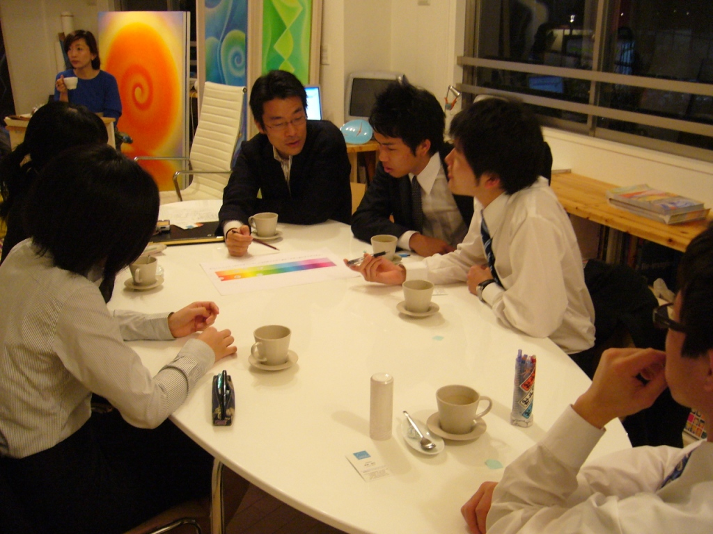
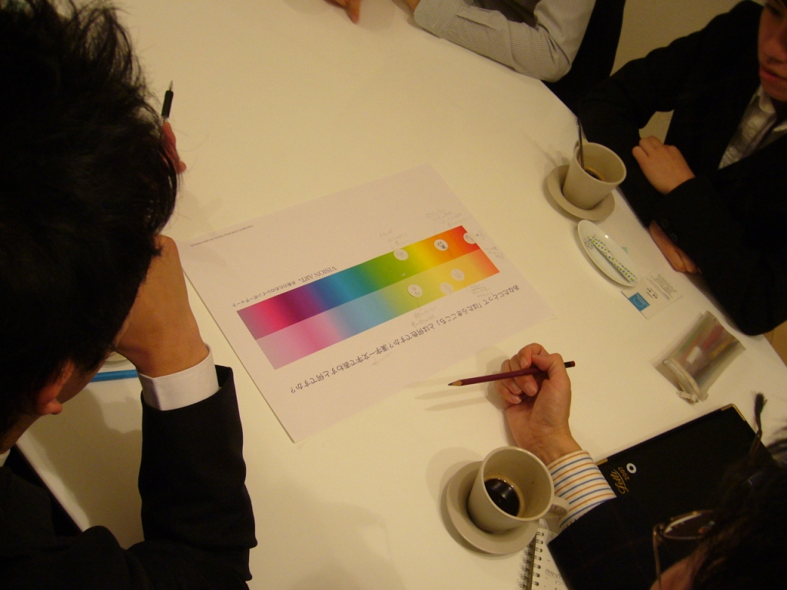
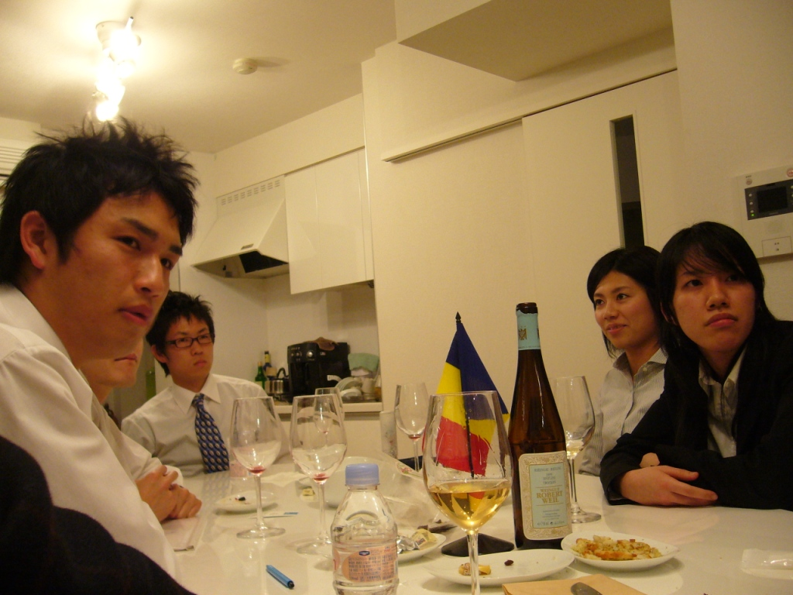
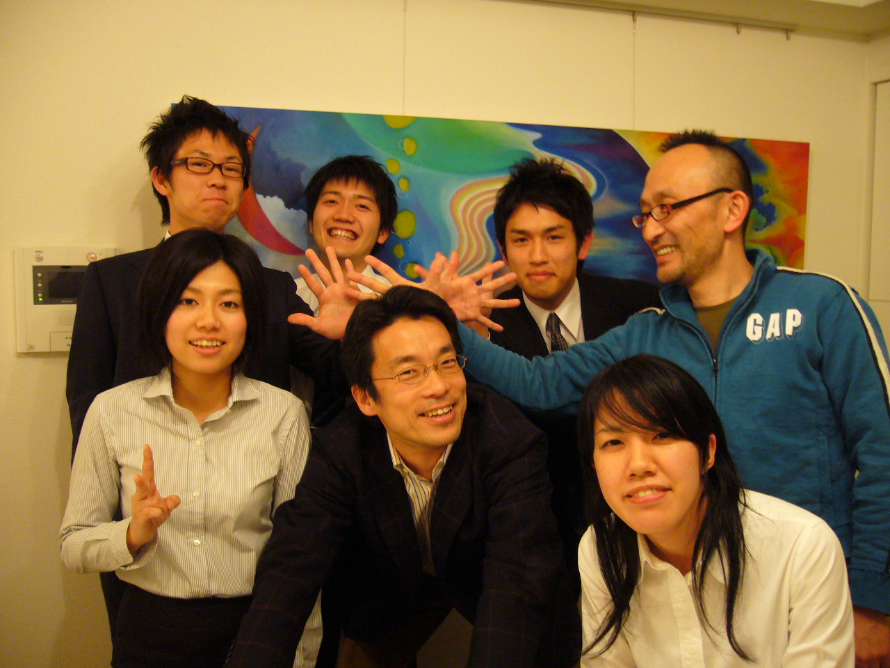

« ＥＭｏＣＡ チョコレートの代わりにＥＭｏＣＡを | メイン | ああ東京マラソン »
2007年02月17日
ＥＭｏＣＡ ＡＲＴな就活相談会
世の中広しといえども、
ＡＲＴを用いた就活相談会なんてきいたことがない。
それをチームＥＭｏＣＡで初開催。
学生はみんな２２歳。
男女あわせて五人の、
国境ならぬ学校の枠組みを超えたサークル仲間とのこと。
テーマは「なぜ働くの？」からスタート。
いきなりこゆい話に一同当惑気味なものの、
しっかりと意見を言ってくるからなかなかたいしたもんだ。
次に繰り出すは、「レインボーチャート」。
対象者が全員大学生というのは初めてかも。
ずばり、「あなたにとってのはたらきごこちは何色？」
っていうのがテーマ。

暖色系を中心に色は分かれる。
そして、次なるは、「連想する漢字一文字は？」

「生」が二票、他、「陽」、「樹」、「絆」
人それぞれ、はたらきごこちが違うってのが、当たり前だけど面白い。
ちなみに、ぼくは「和」
その後、ワイン＆ピザタイムに移行しつつ、
ゆるやかにＡＲＴな就活相談会は無事閉幕。
たぶん、サイコーにクリエイティブな時間だったんじゃないかな。

ちなみに参加した学生は、
「学者」「アーティスト」「維新の志士」「自由人」「舞台演劇の裏方」
という、とっても可能性を秘めた面々。

どんな就活するのやら？
ちょくちょく連絡してきてや～
投稿者 sunrise : 2007年02月17日 15:14
トラックバック
このエントリーのトラックバックURL:
http://www.sunrise77.com/cgi-bin/mt/mt-tb.cgi/119
コメント
たのしそー！
まぜてくださいよー！
投稿者 でむら : 2007年02月18日 02:11
じゃあ五人集めてちょ
投稿者 所長 : 2007年02月18日 14:52
大阪ならば、即開催です！
投稿者 び : 2007年02月19日 09:15